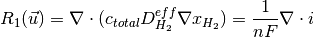
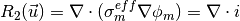
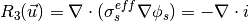
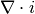

3. Introduction to AppAnode¶
3.1. Introduction¶
AppAnode is used to study mass and charge transport in an anode electrode. Different catalyst layer models can be evaluated including:
- macro-homogeneous catalyst layer model
- agglomerate catalyst layer model.
NOTE: This example uses AppCathode application with different parameters to simulate an anode, therefore much of the equations and process to setup a simulation is the same.
3.2. Governing equations¶
The governing equations are



where,  is the volumetric current density given by the selected model (usually Dual-path hydrogen oxidation reaction model).
For more information on the governing equations, discretization and solution methodology please read Secanell08 and Secanell12.
3.3. Anode Example Directory structure¶
The anode directory consists of the following folders:
- template : This folder contains the default files for running all the examples in the other folders. Please do not modify this file as it will result in all tests failing. If you would like to create your own example either include this file to your simulation using the include command or copy the file to a different location.
- analysis: This folder contains the main.prm and ‘data.prm` files needed to run a single analysis. It is a good starting point to learn how to use OpenFCST.
- polarization_curve : This folder contains the main_test.prm and data_test.prm files needed to run a simulation to obtain a polarization curve. Note the data file includes the template find and adds the necessary modifications. The script to run a test to make sure the polarization curve is running correctly is in the folder regression together with the default data the test is compared to.
3.4. Setting up a anode simulation¶
In order to run OpenFCST, two files are needed that provide the necessary information for OpenFCST to execute:
- A main file: This file is used to select the appropriate: a) type of analysis, i.e. analysis, parametric study, polarization curve and optimization study; application; b) the nonlinear solver; c) data file name; and, d) several less critical parameters.
- A data file: This file is used to input all the input data used for the simulation for the application selected.
Both these files can either be loaded and modified via the openFCST graphical user interface (GUI) or modified as a text file.
3.4.1. Setting up a simulation using the OpenFCST graphical user interface (GUI)¶
If you are using the OpenFCST GUI, you will need to load the .xml files. You can generate an .xml file from a .prm file by first loading the OpenFCST environmental variables by typing in the Install folder: .. code:
$ . fcst_env.sh
Then, enter the folder that contains the main.prm and data.prm files, in this case Install/examples/anode/analysis and call openFCST as follows:
$ fcst2D -c main.prm
openFCST will directly parse the main.prm and the associated data and optimization files (if specified in the main.prm file).
If you would like to use the GUI, first launch the GUI by typing:
$ fcst_gui
Then, select the OpenFCST executable file that you would like the GUI to run, mainly openFCST-2d (or fuel_cell-2d.bin) or openFCST-3d (or fuel_cell-3d.bin) from the /Install/bin folder.
At this point, you can load your main.xml and data.xml files. Go to File> Open Project... and select the main.xml and data.xml files. If you are planning on running an
optimization simulation, then also load the opt.xml file, otherwise select No to loading a new simulation.
Once main.xml and data.xml files are loaded, the GUI will show several folders in the main.xml and data.xml tabs. Each folder contains options that you can modify.
You can open each folder by clicking on them in order to see the variables that can be modified in each subsection. If you hover over each variable with your mouse,
a text window will appear explaining the use of each input parameter.
3.4.1.1. The main.xml file¶
See cathode tutorial.
3.4.1.2. The data.xml file¶
See cathode tutorial.
3.5. Post-processing results¶
After running a simulation several files are produced. File logfile.log contains all the information that is output to screen. File polarization_curve.dat contains the voltage and current density data. If you have run a polarization curve, e.g., by running the example in folder polarization_curve, a collection of files with names * fuel_cell_solution_DataFile_0000X_Cycle_1.vtu* is generated. These are ParaView readable files that can be used to visualize the solution. In the name X refers to the point in the polarization curve.
In order to visualize the results, open the file on ParaView and select the apprpriate field variable you would like to visualize. For more infomation about using ParaView visit the project website at: www.paraview.org/
3.6. References¶
M Secanell, K Karan, A Suleman, N Djilali, Optimal design of ultralow-platinum PEMFC anode electrodes, Journal of the Electrochemical Society 155 (2), B125-B134, 2008.
P Dobson, C Lei, T Navessin, M Secanell, Characterization of the PEM fuel cell catalyst layer microstructure by nonlinear least-squares parameter estimation, Journal of the Electrochemical Society 159 (5), B514-B523, 2012